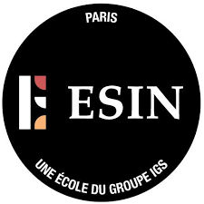

Créée en 2020; L'ESIN est L'Ecole Supérieure de l'Intelligence Numérique du Groupe IGS, implantée à Paris. Elle a été créée pour répondre aux enjeux cruciaux pour les entreprises et leur futurd collaborateurs, en donnant à ses étudiants un socle de compétences répondant aux innovations technologiques et à leur applications business.
L'ESIN forme des personnes passionnée par l'innovation et la transition numérique qui souhaitent maîtriser les enjeux de la transformation digitale , qu'elles soient en terminale Bac+1, Bac+2, étudiants internationaux ou encore salariés en reconversion.
L'Esprit de l'école repose sur trois piliers : Rigueur, Enthousiasme , et Cohésion!!!
QUI VEUT , PEUT !!!
Tout ce qui se passera durant les 5 années , est annoncé dès l'arrivée des étudiants et plus important encore , tout ce qui doit être fait , le sera !
Tout est déjà mis en place pour faciliter la création de liens avec les autres écoles du Groupe IGS et promouvoir les valeurs de l'école.